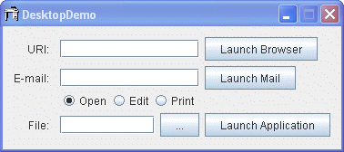
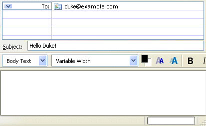

La Edición Estándar de Java™ versión 6
Java™ Standard Edition version 6 reduce la brecha entre el rendimiento y la integración de aplicaciones
nativas y aplicaciones Java. Junto con la nueva funcionalidad de la
bandeja del sistema,
soporte para la
pantalla de bienvenida, y
la
impresión de JTables
mejorada, la versión 6 de Java SE suministra la IPA del Escritorio (Desktop) (java.awt.Desktop)
IPA, la cual permite a las aplicaciones de Java a interactura con las aplicaciones por defecto asociadas con
tipos de ficheros específicos en la plataforma anfitriona.
La nueva funcionalidad está implementada por la clase
Desktop.La IPA surge
del proyecto Componentes de Integración del JDesktop (JDIC, en inglés). El objetivo del proyecto JDIC es
hacer a las "aplicaciones basadas en tecnología Java ciudadanos de primera clase" del escritorio,
permitiendo una integración perfecta. JDIC ofrece a las aplicacoines Java el acceso a funcionalidades y
facilidades suministradas por el escritorio nativo. Con respecto a la nueva IPA de escritorio, esto significa
que una aplicación Java puede realizar las siguientes operaciones:
La IPA de Desktop usa las asociaciones de fichero del sistema operativo anfitrión para lanzar las aplicaciones asociads con tipos de ficheros específicos. Por ejemplo, si la extensión de fichero OpenDocument text (.odt) está asociada con la aplicación OpenOffice Writer, una aplicación de Java podría lanzar a OpenOffice Writer para abrir, editar, o incluso imprimir ficheros con esa asociación. Dependiendo del sistema anfitrión, aplicaciones diferentres pueden estar asociadas con acciones diferentes. Por ejemplo, si un fichero particular no puede ser impreso, compruebe primero si la extensión tiene una asociación de impresión en el sistema operativo dado.
Use el método
isDesktopSupported() para determinar si la IPA Desktop está disponible. En el Sistema
Operativo Solaris y la plataforma Linux, esta IPA depende de las librerías de Gnome. Si esas librerías no
están disponibles, este método devolverá false. Después de determinar que la IPA Desktop está soportada,
estos es, que isDesktopSupported() devuelve true, la aplicación puede recuperar una instancia
de Desktop usando el método estático
getDesktop().
Si una aplicación se ejecuta en un entorno sin un teclado, ratón, o monitor (un entorno sin dispositivos de
entrada/salida o headless environment en inglés), el método getDesktop() lanza una
java.awt.HeadlessException.
Una vez recuperada, la instancia Desktop permite a una aplicación a navegar, enviar correo,
abrir, editar, o incluso imprimir un archivo o IUR (Identificador Uniforme de Recursos, URI en inglés), pero
sólo si la instancia recuperada Desktop soporta estas actividades. Cada una de estas actividades es
llamada una acción, y cada una es representada como una instancia de enumeración Desktop.Action:
BROWSE — Representa una acción de navegación realizada por el navegador por defecto del
anfitrión.
MAIL — Representa una acción de correo realizada por el cliente de correo por defecto
del anfitrión.
OPEN — Representa una acción de apertura realizada por una aplicación asociada con la
apaertura de un tipo de fichero específico.
EDIT — Representa una acción de edición realizada por una aplicación asociada con la
edición del tipo de fichero específico.
PRINT — Representa una acción de impresión realizada por una aplicación asociada con la
impresión del tipo de fichero específico.
Se pueden registrar diferentes aplicaciones para diferentes acciones incluso en el mismo tipo de archivo. Por ejemplo, el navegador Firefox puede ser lanzado por la acción OPEN, EMACS para la acción EDIT, y aún una aplicación diferente para la acción PRINT. Las asociaciones de escritorio de su equipo son usadas para determinar qué aplicación debe ser invocada. La habilidad para manipular asociaciones de fichero del escritorio no es posible con la versión actual de la IPA Desktop en el KDJ 6, y esas asociaciones pueden ser creadas o cambiad sólo con herramientas dependientes de la plataforma en este momento.
Los siguientes ejemplos muestran las capacidades mencionadas arriba.

https://docs.oracle.com/javase/tutorial.
mailto que soporta los campos
CC, BCC, SUBJECT, y BODY, por ejemplo – duke@ejemplo.com?SUBJECT=Hola Duke!.

.odt, .html, .pdf. Nota: Si intenta editar un fichero
.pdf, DesktopDemo devolverá el siguiente mensaje:
No se puede realizar la operación dada con el archivo <nombre de archivo>
Los siguientes trozos de código ofrecen más detalles de la implementación de la aplicación DeskDemo. El constructor DesktopDemo deshabilita los pocos componentes justo después de instanciar el IU y comprueba si la IPA del Desktop está disponible.
public DesktopDemo() {
// inicia todos los componentes del igu
initComponents();
// deshabilita los botones que lanzan el navegador, el cliente de correo,
// deshabilita los botones que abren, edita, imprimen ficheros
disableActions();
// antes de que cualquier IPA de Desktop IPA sean usadas, primero comprueba si la IPA está
// soportada por esta MV particular en este equipo particular
if (Desktop.isDesktopSupported()) {
desktop = Desktop.getDesktop();
// ahora habilita los botones para las acciones que están soportadas.
enableSupportedActions();
}
...
/**
* Deshabilita todos los componentes gráficos hasta que sepamos
* si su funcionalidad está soportada
*/
private void disableActions() {
txtBrowserURI.setEnabled(false);
btnLaunchBrowser.setEnabled(false);
txtMailTo.setEnabled(false);
btnLaunchEmail.setEnabled(false);
rbEdit.setEnabled(false);
rbOpen.setEnabled(false);
rbPrint.setEnabled(false);
txtFile.setEnabled(false);
btnLaunchApplication.setEnabled(false);
}
...
Una vez es adquirido un objeto Desktop, puede consultar al objeto para descubrir qué acciones específicas están soportadas. Si el objeto Desktop no soporta acciones específicas, o si la IPA Desktop en sí misma no está soportada, DesktopDemo simplemente mantiene los componentes gráficos afectados deshabilitados.
/**
* Habilita las acciones que son soportadas en este equipo.
* Las acciones son las siguientes: abrir navegador,
* abrir cliente correo, y abrir, editar, e imprimir
* ficheros usando su aplicación asociada.
*/
private void enableSupportedActions() {
if (desktop.isSupported(Desktop.Action.BROWSE)) {
txtBrowserURI.setEnabled(true);
btnLaunchBrowser.setEnabled(true);
}
if (desktop.isSupported(Desktop.Action.MAIL)) {
txtMailTo.setEnabled(true);
btnLaunchEmail.setEnabled(true);
}
if (desktop.isSupported(Desktop.Action.OPEN)) {
rbOpen.setEnabled(true);
}
if (desktop.isSupported(Desktop.Action.EDIT)) {
rbEdit.setEnabled(true);
}
if (desktop.isSupported(Desktop.Action.PRINT)) {
rbPrint.setEnabled(true);
}
if (rbEdit.isEnabled() || rbOpen.isEnabled() || rbPrint.isEnabled()) {
txtFile.setEnabled(true);
btnLaunchApplication.setEnabled(true);
}
}
El método browse(uri) puede lanzar una variedad de excepciones, incluyendo una
NullPointerException si la IUR es nula, y una UnsupportedOperationException si la acción BROWSE no está
soportada. Este método puede lanzar una IOException si el navegador por defecto o la aplicación no puede ser
encontrada o lanzada, y una SecurityException si un gestor de seguridad deniega la invocación.
private void onLaunchBrowser(ActionEvent evt) {
URI uri = null;
try {
uri = new URI(txtBrowserURI.getText());
desktop.browse(uri);
} catch(IOException ioe) {
System.out.println("El sistema no puede encontrar el fichero " + uri +
" especificado");
//ioe.printStackTrace();
} catch(URISyntaxException use) {
System.out.println("Carácter ilegal en la ruta");
//use.printStackTrace();
}
}
Las aplicaciones pueden lanzar el cliente de correo por defecto del equipo, si esa acción está soportada,
llamando al método mail(uriMailTo) de esta instancia Desktop.
private void onLaunchMail(ActionEvent evt) {
String mailTo = txtMailTo.getText();
URI uriMailTo = null;
try {
if (mailTo.length() > 0) {
uriMailTo = new URI("mailto", mailTo, null);
desktop.mail(uriMailTo);
} else {
desktop.mail();
}
} catch(IOException ioe) {
ioe.printStackTrace();
} catch(URISyntaxException use) {
use.printStackTrace();
}
}
Las aplicaciones Java pueden abrir, editar, e imprimir ficheros desde sus aplicaciones asociadas usando los
métodos open(), edit(), and print() de la clase Desktop,
respectivamente.
private void onLaunchDefaultApplication(ActionEvent evt) {
String fileName = txtFile.getText();
File file = new File(fileName);
try {
switch(action) {
case OPEN:
desktop.open(file);
break;
case EDIT:
desktop.edit(file);
break;
case PRINT:
desktop.print(file);
break;
}
} catch (IOException ioe) {
//ioe.printStackTrace();
System.out.println("No pude realizar la operación dada a el fichero " + file + ".");
}
}
El código completo para esta demo está disponible en el fichero
DesktopDemo.java.
La clase Desktop permite a las aplicaciones Java lanzar las aplicaciones nativas del escritorio
que manejan IURs o ficheros.
| Método | Propósito |
|---|---|
| isDesktopSupported() |
Comprueba si esta clase es soportada en la plataforma actual. Si es soportada, use
getDesktop() para recuperar una instancia.
|
| getDesktop() |
Devuelve la instancia Desktop del contexto del navegador actual. En algunas
plataformas la IPA del Desktop puede no estar soportada. Use el método
isDesktopSupported() para determinar si el escritorio actual está soportado.
|
| isSupported(Desktop.Action) |
Comprueba si una acción es soportada en la plataforma actual. Use las siguientes constantes de la
enumeración de
Desktop.Action: BROWSE, EDIT, MAIL,
OPEN, PRINT.
|
| browse(URI) |
Lanza el navegador por defecto para visualizar una IUR. Si el navegador por defecto no es capaza de
manejar la IUR especificada, la aplicación registrada para manejar IURS del tipo especificado es
invocada. La aplicación es determinada desde el protocolo y ruta de la IUR, como se definió en la
clase URI.
|
| mail(URI) |
Lanza la ventana de composición del mensaje de correo del cliente de correo por defecto del usuario,
rellenando los campos del mensaje especificados por una mailto: IUR.
|
| open(File) | Lanza la aplicación asociada para abrir un fichero. |
| edit(File) | Inicia la aplicación de editor asociada y abre un archivo para editar. |
| print(File) | Imprime un fichero con ela facilidad de impresión nativa del escritorio, usando el comando imprimir de la aplicación asociada. |
La siguiente tabla lista los ejemplos que usan la integreación de la clase Desktop.
| Ejemplo | Dónde Se Describe | Notas |
|---|---|---|
DesktopDemo |
Esta sección | Lanza el navegador por defecto del sistema del equipo con la IUR especificada y el cliente de correo por defecto; lanza una aplicación para abrir, editar, o imprimir un fichero. |